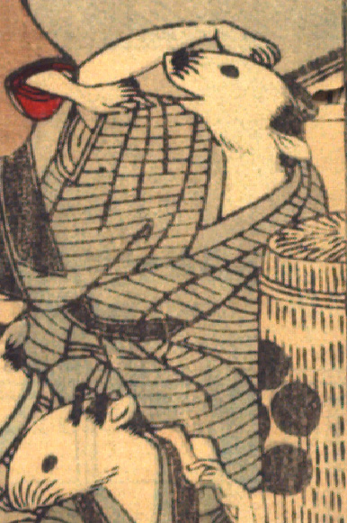

男の鼠。髪を結い、墨色の縞模様の着物をまとい、座っている。右手を頭に当て、画面左側の鼠と話している。手は人間のものである。手前に紋が入った俵が置かれている。
著作者：David Thompson／出典：親書誌：U426_nichibunken_0112：Nedzumi no Yome-Iri／日付：2006／資源識別子：U426_nichibunken_0112_0007_0006
Copyright (c)2010- International Research Center for Japanese Studies, Kyoto, Japan. All rights reserved.